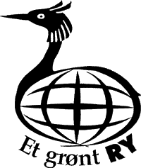
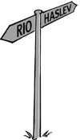
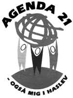

LandsNet
for lokale Agenda 21-grupper
 Øko-net
arbejder på at få lavet en adresseliste over alle de spirende private- / folkelige
Agenda 21-grupper, der arbejder og blomstrer rundt omkring lokalt. Send pr. brev
eller e-mail adresse-data og beskrivelser af lokale Agenda 21-grupper, incl. andre
lokale miljøgrupper.
Øko-net
arbejder på at få lavet en adresseliste over alle de spirende private- / folkelige
Agenda 21-grupper, der arbejder og blomstrer rundt omkring lokalt. Send pr. brev
eller e-mail adresse-data og beskrivelser af lokale Agenda 21-grupper, incl. andre
lokale miljøgrupper.
Listens udvikling kan følges i Adresse og kontakt databasen på denne hjemmeside.
Til inspiration og som eksempel på, hvordan det lokale Agenda 21-arbejde sker
rundt omkring i landet, bringer vi her eksempler fra fire forskellige kommuner.
1. Et Grønt Ry
2. Lokal Agenda 21 - Svinninge kommune
3. Agenda 21 - Valby
4. Agenda 21 - gruppen i Haslev
Et Grønt
Ry
Sådan hedder den lokale Agenda
21-forening i Ry. Foreningens formål er at virkeliggøre visionen om en bæredygtig
udvikling i Ry Kommune. Bl.a. ved at stimulere borgerne i Ry Kommune til at tænke
og handle mere miljø- og ressourcebevidst. At støtte eksisterende og nye projekter
indenfor lokalt miljøarbejde.
At støtte opbygningen af netværk mellem foreninger og mellem institutioner indenfor
kommunen. At indsamle og formidle viden om miljørigtig adfærd. At være projekt-
og økonomisk ansvarlig for en lokal Grøn Guide
(Charlotte Valløe, tlf.: 87 88 00 25, e-mail: gg-ry@private.dk) og en grøn butik.

I Ry er kommunens Agenda 21-repræsentant selvskrevet som medlem af bestyrelsen.
Til orientering kan det oplyses, at medlemskab koster 100 kr. for individuelle
medlemmer, 50 kr. for pensionister og 300 kr. for virksomheder og foreninger.
Kontaktperson / formand:
Susanne Skårup,
Knudsvej 20,
8680 Ry
Tlf.: 86 89 09 14
Til sidens top
Lokal Agenda 21 - Svinninge
Kommune
Følgende hensigtserklæring er grundlaget for det lokale arbejde
i Svinninge:
Vi ønsker et samarbejde med kommunalbestyrelsen, men vi er ikke en del af det
kommunale system - hverken det administrative eller det politiske. Kommunen kan
bruge os, hvis den vil.
Vi vil gerne være det lokale forum for udvikling af Agenda initiativer i offentlige
og private sager, i erhvervslivet og i institutionerne. Vi synes, at det lokale
Agenda 21-arbejde i videst muligt omfang skal foregå på initiativ fra borgerne
og med støtte fra kommunen, således at man appellerer til en så bred og aktiv
kreds som muligt.
Kontaktperson / formand:
Jette Stranum,
Ådalen 5,
4520 Svinninge
Tlf.: 59 26 60 18
e-mail: jst@svinninge.dk web-side: www.svp.dk/agenda21
Til sidens top
Agenda 21-Valby
Kort fortalt startede gruppen i marts 1998, og var heldig hurtigt
at få en pose penge fra Bydelsrådets Valborg-pulje (5.000 kr.) så vi kunne blive
nogle flere og få gang i nogle projekter.
Vi er 44.000 mennesker, der bor tæt med masser af tung trafik og få rekreative
områder, så der er meget, der kan gøres bedre fra resterne af den gamle landsbymidte
ved Tingstedet i nord til sydenden ved Kalvebod Strand. Der er 63 (!) institutioner
i området, der i øvrigt består af ret tæt etagebyggeri med ældre og meget attraktive
villakvarterer ind imellem. De sociale problemer ligger i den lidt lettere ende
end gennemsnittet i København.
Vi er i øjeblikket ca. 10 mennesker med meget forskellige aldre og baggrund, der
har ligeså forskellige interesser i økologi og bæredygtighed. Vi arbejder sammen
med det nu 10 år gamle Økologiske Torv, der holder torvedag tirsdag eftermiddag
og lørdag på Valby Tingsted, ligesom vi forsøger at starte en lokalgruppe af Grønne
Familier i Valby - så fødevarer og forbrug er et af vores arbejdstemaer og dermed
også affald og kompostering.
Det andet vigtige tema er trafikken. Indtil nu har vi udarbejdet forslag til forbedring
på både Ringstedbanen og den kommende Ringbane, der kommer til at berøre Valby
meget. Vi har også projekteret en ny Syd-Vest Banegård ved Sjælør S-station, der
ville smidiggøre hele regional og S-banenettet, og som Banestyrelsen faktisk er
blevet ret glad for. Derudover har vi arbejdet med cykelsti-ideer i samarbejde
med Dansk Cyklist Forbund.
Vi stiller op med workshops og brochurer, når lejlighed gives, som ved Grund-ejerlaugets
jubilæum i foråret, kulturdagene i september og julemarkedet i slutningen af november.
I øvrigt fik Valby en Grøn Guide i foråret '99
(Anders Wiig Nielsen, tlf.: 36 30 30 31, e-mail: guide@mail.tele.dk),
og vi har kontakter til Københavns Miljø- og Energikontor, ligesom vi er på den
kommunale Agenda 21's adresseliste.
Kontaktperson:
Grete Signe Jensen,
Bramslykkevej 11, 2. th.,
2500 Valby
Tlf.: 36 46 14 94
Til sidens top
Agenda 21-gruppen
i Haslev

I Haslev Kommune er samarbejdet
mellem borgere og kommune meget udviklet:
Byrådet afsætter hvert år ca. 50.000 kr. til en Agenda 21-pulje, som den borgervalgte
Agenda 21-gruppes bestyrelse administrerer.
Bestyrelsen består af en frivillig, ulønnet og ikke-partipolitisk kreds. Bestyrelsens
opgave er at arbejde for at de mål, der blev sat på RIO-konferencen 1992 for lokalt
Agenda 21-arbejde, udføres i Haslev.
Desuden har kommunen ansat en medarbejder, der arbejder med Agenda 21 i kommunen
og som inspirerer borgerne til at arbejde med Agenda 21. Agenda 21-medarbejderen
har udarbejdet Grønt Regnskab for kommunens institutioner og er med til at lave
trafik- og miljøhandlingsplaner i kommunen.
Desuden er der i Haslev blevet etableret 'Ernæringsgruppen under Agenda 21 i Haslev'.
Gruppen støtter op omkring, at Haslev Kommune er ved at udarbejde en kostpolitik.
I forslaget lægges bl.a. op til, at der ved indkøb af råvarer kommunalt skal satses
på en vis del økologiske produkter og at varerne er produceret lokalt.
Desuden har man i Haslev opstartet 'Grøntsagskassen' der ugentlig udbringer økologisk
frugt og grøntsager til p.t. 74 tilmeldte husstande.

Kontaktperson / formand:
Margereta Clausager,
c/o Haslev Kommune
Frederiksgade 9,
4690 Haslev
Tlf.: 56 31 44 44 eller 56 32 64 70
Til sidens top